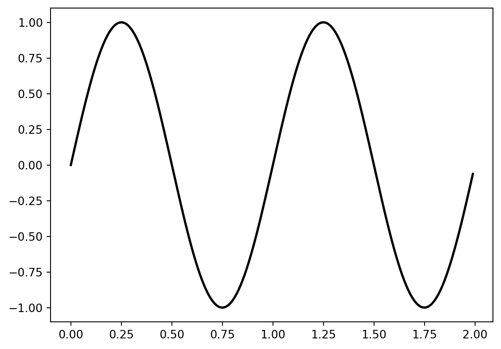
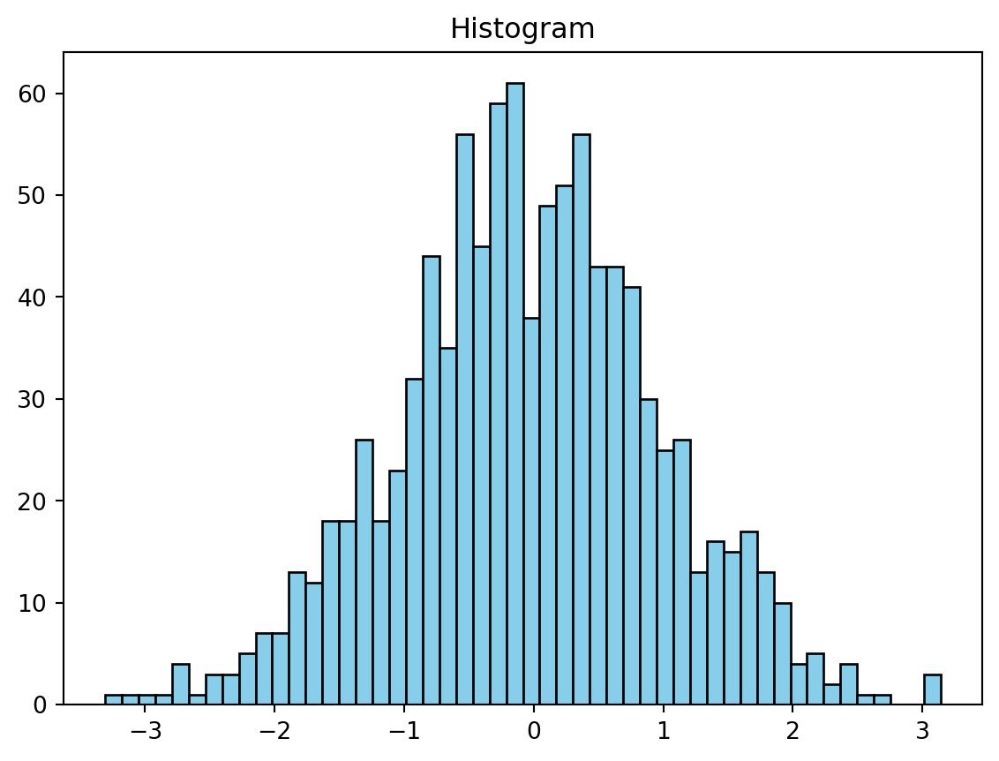
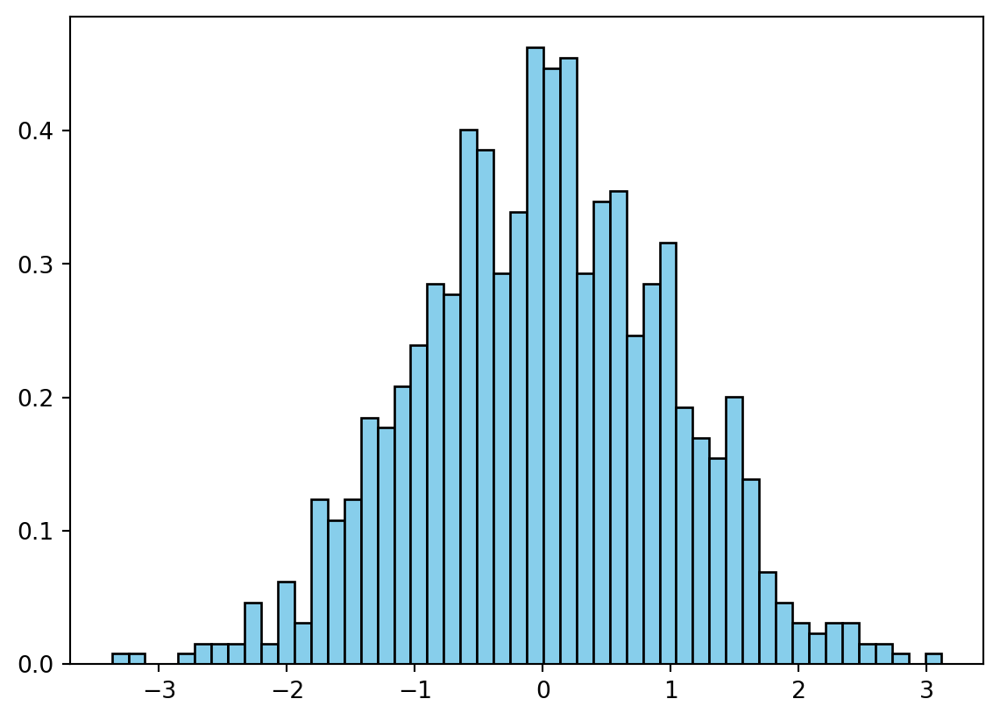
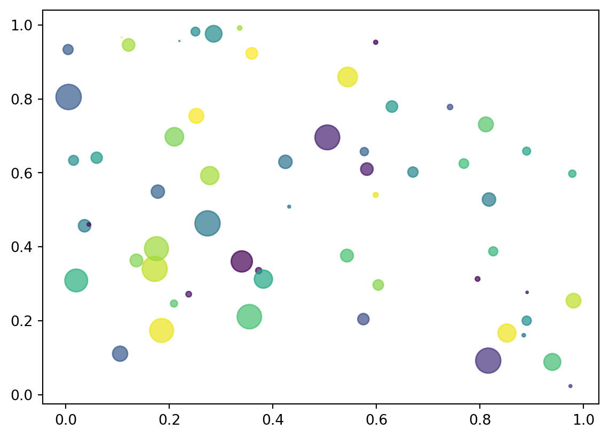

import matplotlib.pyplot as plt
fig, axes = plt.subplots(2, 2) # 创建一个包含 2x2 个子图的 Figure
plt.show()信息技术基础 🚀
第八章 Matplotlib——绘制图形 ✨
Matplotlib 简介 🎉
Matplotlib 是 Python 数据科学生态中一颗璀璨的明星 🌟，它是创建各种静态、动态和交互式可视化图表的强大武器 🛠️。无论你是数据分析新手还是经验丰富的专家，Matplotlib 都能满足你的需求。
它具有以下闪光点：
- 🎨 易学易用: Matplotlib 的 API 设计简洁明了，就像搭积木一样，你可以轻松组合各种元素，构建出漂亮的图表。
- 📊 功能强大: 无论是折线图、散点图、直方图，还是饼图、箱线图、热力图，Matplotlib 都能轻松驾驭，让你的数据栩栩如生。
- ⚙️ 高度可定制: 想要个性化你的图表？没问题！Matplotlib 允许你精细控制图表的每一个细节，从颜色、线型到标签、标题，一切尽在掌握。
- 💡 与 Jupyter Notebook 完美结合: 在 Jupyter Notebook 中，你可以直接显示 Matplotlib 图表，并与之互动，让数据探索更加便捷高效。

为什么要拥抱 Matplotlib？ 🤗
- 📈 数据可视化是数据分析的灵魂。 通过将数据转化为图形，我们能够更直观地洞察数据背后的故事，发现隐藏的模式，识别异常值，并从中获得宝贵的见解。
- 📣 Matplotlib 是 Python 数据科学生态系统的基石。 它与 NumPy、Pandas 等数据科学利器无缝集成，让你能够流畅地处理和可视化数据，事半功倍。
- 👨💻 Matplotlib 是业界广泛使用的可视化工具。 无论是在学术殿堂、商业战场，还是数据新闻领域，Matplotlib 都是数据可视化不可或缺的伙伴，助你一臂之力。
Note
数据可视化是将抽象的数据以图形或图像的形式呈现出来，让数据更易于理解、分析和沟通。它就像一座桥梁，连接着冰冷的数据和人类的认知，让数据变得生动有趣。
Note
Python 数据科学生态系统是由一系列用于数据科学的 Python 库和工具组成的大家庭。这些成员各有所长，相互协作，为数据处理、分析、可视化和机器学习提供了强大的支持。其中，Numpy和Pandas是重要的组成部分。
Matplotlib vs. MATLAB：一场绘图库的较量 ⚔️
Matplotlib 的绘图接口与 MATLAB 有着异曲同工之妙，这使得 MATLAB 用户可以轻松过渡到 Matplotlib。不过，它们之间也存在一些关键差异：
| 特性 | Matplotlib | MATLAB |
|---|---|---|
| 语言 | Python | MATLAB |
| 类型 | 开源、免费 🆓 | 商业软件、收费 💰 |
| 扩展性 | 易于与其他 Python 库集成，拥有无限可能 ♾️ | 扩展性相对有限 |
| 社区支持 | 庞大的开源社区，活跃的开发者和用户群体，让你不再孤单 💪 | MathWorks 公司提供的官方支持和有限的社区资源 |
| 应用领域 | 数据科学、机器学习、科学计算、Web 开发等，无所不能 🚀 | 工程、科学计算、控制系统等 |

目录：探索 Matplotlib 的奇妙世界 🗺️
- 基本布局对象：揭开 Matplotlib 图表结构的神秘面纱，认识 Figure、Axes 和 Subplot 这三位核心成员。
- 图表样式修改与装饰项接口：学习如何为图表穿上华丽的 পোশাক (孟加拉语：服装)，定制线条样式、颜色、标记、坐标轴、图例等，让你的图表独一无二。
- 基础图表绘制：掌握绘制各种常见图表类型的独门秘籍，包括直方图、散点图、饼图、柱状图、折线图和表格，让你的数据跃然纸上。
目录：探索 Matplotlib 的奇妙世界 🗺️ （续）
- Matplotlib 3D：开启三维可视化之旅，探索如何使用 Matplotlib 创建令人惊叹的立体图表，让你的数据更具立体感。
- Matplotlib 与 Jupyter 结合：解锁 Matplotlib 与 Jupyter Notebook 的协同魔法，打造交互式数据可视化文档，让你的数据分析更上一层楼。
基本布局对象：图表的骨骼与肌肉 💪
Matplotlib 图表由多个基本组件构成，它们共同支撑起整个可视化框架。
- Figure (图形): 🖼️ 整个绘图区域，就像一块画布，你可以在上面尽情挥洒创意。它可以包含一个或多个 Axes。
- 使用
matplotlib.pyplot.figure()创建。
- 使用
- Axes (轴域): 📈 具有数据空间的图像区域，通常包含两个（二维）或三个（三维）坐标轴，它们定义了数据的范围和刻度。一个 Figure 可以包含多个 Axes，但一个 Axes 只能属于一个 Figure。
- 使用
matplotlib.figure.Figure.add_axes()创建。
- 使用
- Subplot (子图): 🧩 将 Figure 划分为多个子区域，每个子区域可以包含一个 Axes。这就像在画布上划分出多个小格子，每个格子都可以绘制不同的图表。
- 使用
matplotlib.figure.Figure.add_subplot()或plt.subplots()创建。
- 使用
基本布局对象：图解

基本布局对象：图解 - Figure
Note
Figure (图形): 🖼️ 整个绘图区域，就像一块画布，你可以在上面尽情挥洒创意。它可以包含一个或多个 Axes。
- 使用
matplotlib.pyplot.figure()创建。
基本布局对象：图解 - Axes
Note
Axes (轴域): 📈 具有数据空间的图像区域，通常包含两个（二维）或三个（三维）坐标轴，它们定义了数据的范围和刻度。一个 Figure 可以包含多个 Axes，但一个 Axes 只能属于一个 Figure。
- 使用
matplotlib.figure.Figure.add_axes()创建。
基本布局对象：图解 - Subplot
Note
Subplot (子图): 🧩 将 Figure 划分为多个子区域，每个子区域可以包含一个 Axes。这就像在画布上划分出多个小格子，每个格子都可以绘制不同的图表。
- 使用
matplotlib.figure.Figure.add_subplot()或plt.subplots()创建。
基本布局对象：实战演练 ⚔️
让我们通过一个简单的例子来理解这些概念：
import matplotlib.pyplot as plt：导入matplotlib.pyplot模块，并将其简称为plt。这是使用 Matplotlib 的标准做法。fig, axes = plt.subplots(2, 2)：创建一个包含 2x2 个子图的 Figure，并将 Figure 对象赋值给fig，将 Axes 对象数组赋值给axes。axes数组的形状是 (2, 2)，可以通过axes[0, 0]、axes[0, 1]、axes[1, 0]、axes[1, 1]分别访问每个子图。
基本布局对象：实战演练 ⚔️ - 结果

基本布局对象：进阶实战 🚀
现在，让我们在每个子图中绘制不同的图表：
import matplotlib.pyplot as plt
import numpy as np
fig, axes = plt.subplots(2, 2, figsize=(8, 8)) # 创建一个包含 2x2 个子图的 Figure
# 绘制简单图形
t = np.arange(0.0, 2.0, 0.01)
s = 1 + np.sin(2 * np.pi * t)
axes[0, 0].plot(t, s)
axes[0, 0].set_title('Simple Plot') # 添加标题
plt.show()基本布局对象：进阶实战 🚀 （续）
# 绘制直方图
np.random.seed(20180201)
s = np.random.randn(2, 50)
axes[0, 1].hist(s[0], bins = 10, color='skyblue', edgecolor='black') # 10个柱子的直方图，并设置颜色
axes[0, 1].set_title('Histogram')
plt.show()
NumPy：Python 数值计算的基石 🧱
NumPy（Numerical Python）是 Python 科学计算的基础库，它提供了强大的 N 维数组对象 ndarray，以及用于对数组进行高效操作的各种函数。NumPy 是数据分析、机器学习等领域不可或缺的工具。
np.random.randn(2, 50) 用于生成一个形状为 (2, 50) 的数组，其中的元素服从标准正态分布（均值为 0，标准差为 1）。
基本布局对象：进阶实战 🚀 （续）
# 绘制散点图
axes[1, 0].scatter(s[0], s[1], color='coral', marker='o') # 绘制散点图，设置颜色，标记
axes[1, 0].set_title('Scatter Plot')
plt.show()基本布局对象：进阶实战 🚀 （续）
# 绘制饼图
labels = 'Taxi', 'Metro', 'Walk', 'Bus', 'Bicycle', 'Drive'
sizes = [10, 30, 5, 25, 5, 25]
explode = (0, 0.1, 0, 0, 0, 0) # 突出显示 "Metro"
axes[1, 1].pie(sizes, explode=explode, labels=labels, autopct='%1.1f%%', shadow=True, startangle=90)
axes[1, 1].axis('equal') # 确保饼图是圆形的
axes[1, 1].set_title('Pie Chart')
plt.tight_layout() # 自动调整子图参数, 使之填充整个图像区域
plt.show()Subplot 与 Axes：兄弟情深 🤝
Subplot是Axes的子类，它们之间有着密切的关系。add_subplot()方法实际上创建了一个Axes对象，并将其添加到Figure的子图网格中。Axes提供了更丰富的方法来定制图表，例如设置坐标轴范围、添加标题、添加图例等。

Subplot 与 Axes：兄弟情深 🤝 - 代码解释
Note
从上图可以看出，add_subplot() 方法返回的是 AxesSubplot 对象，它是 Axes 的子类。
直接创建并选中 Subplot：一步到位 🎯
除了使用 add_subplot() 方法外，还可以使用 matplotlib.pyplot.subplot() 方法直接创建一个 Subplot 并将其设置为当前活动的 Subplot，这样后续的绘图操作都会在这个 Subplot 上进行。
import matplotlib.pyplot as plt
fig = plt.figure()
axe = plt.subplot(2, 2, 1) # 创建一个 2x2 的子图网格，并选中第一个子图
# 在第一个子图中绘制一些内容...
axe.plot([1,2,3,4,5], [2,4,1,5,2])
plt.show()
直接创建并选中 Subplot：一步到位 🎯 （续）
axe = plt.subplot(2, 2, 3) # 选中第三个子图
# 在第三个子图中绘制一些内容...
axe.scatter([1,2,3,4,5], [2,4,1,5,2])
fig.suptitle('Example of multiple subplots')
plt.show()
Tip
激活状态的图表：谁是主角？ 🎬
在 Matplotlib 中，可以同时存在多个 Figure 和 Axes 对象。处于激活状态的 Figure 或 Axes 是指当前正在进行绘图操作的对象。可以使用 plt.gcf() 获取当前活动的 Figure，使用 plt.gca() 获取当前活动的 Axes。
Figure 的构成：细节决定成败 🔍
一个 Figure 对象通常包含以下元素，它们共同构成了图表的完整信息：
- 坐标轴刻度 (Tick): 坐标轴上的标记，用于指示数据值。
- 图表标题 (Title): 图表的名称，概括图表的主题。
- 图例 (Legend): 用于解释图表中不同元素的含义，例如不同颜色或线型代表的数据系列。
- 其他装饰元素： 如图例、网格线、文本注释等，用于增强图表的可读性和美观性。
所有这些元素都可以通过 Matplotlib 提供的接口进行修改，让你的图表更加个性化。

图表样式修改与装饰项接口：让你的图表焕然一新 ✨
Matplotlib 提供了丰富的接口来修改图表的样式和添加装饰项，让你可以随心所欲地定制图表的外观，打造出独具风格的可视化作品。
- 修改线条样式和颜色： 可以使用
plot()函数的linestyle和color参数来控制线条的样式和颜色，让你的曲线更加生动。 - 修改坐标轴刻度和标签： 可以使用
set_xticks()、set_yticks()、set_xticklabels()和set_yticklabels()方法来控制坐标轴的刻度和标签，让你的图表更加清晰易读。 - 添加文字注释： 可以使用
text()和annotate()方法在图表中添加文字注释，突出显示重要信息或添加解释说明。

修改图表样式：线条的舞步 💃
import matplotlib.pyplot as plt
import numpy as np
fig, axe = plt.subplots()
# 绘制第一条曲线
t = np.arange(0.0, 2.0, 0.01)
s = np.sin(2 * np.pi * t)
axe.plot(t, s, color='black', linestyle='-', linewidth=2) # 黑色实线，线宽为2
plt.show()
修改图表样式：线条的舞步 💃（续）
# 绘制第二条曲线
s = np.sin(2 * np.pi * (t + 0.5))
axe.plot(t, s, color='cyan', linestyle='--', linewidth=1.5, marker='o', markersize=4) # 青色虚线, 加点标记
plt.show()在上面的例子中，我们使用了 color、linestyle、linewidth、marker 和 markersize 等参数来定制线条的样式。
常用线条样式和颜色参数：色彩与形态的交响曲 🌈
color 参数值 |
含义 | linestyle 参数值 |
含义 |
|---|---|---|---|
'r' |
红色 🔴 | '-' |
实线 |
'y' |
黄色 🟡 | '--' |
虚线 (短划线) |
'g' |
绿色 🟢 | '-.' |
点划线 |
'c' |
青色 🔵 | ':' |
虚线 (点) |
'b' |
蓝色 🔵 | ||
'm' |
紫红色 🟣 | ||
'w' |
白色 ⚪ | ||
'k' |
黑色 ⚫ |
修改装饰项：坐标轴的刻度与标签 📏
import matplotlib.pyplot as plt
import numpy as np
fig, axe = plt.subplots()
# 绘制两条曲线（与上一个示例相同）
t = np.arange(0.0, 2.0, 0.01)
s = np.sin(2 * np.pi * t)
axe.plot(t, s, color='k', linestyle='-', label='Line 1')
s = np.sin(2 * np.pi * (t + 0.5))
axe.plot(t, s, color='c', linestyle='--', label='Line 2')
# 设置坐标轴刻度
axe.set_xticks(np.arange(0.0, 2.5, 0.5)) # 设置 x 轴刻度
axe.set_yticks([-1, 0, 1]) # 设置 y 轴刻度
plt.show()修改装饰项：坐标轴的刻度与标签 📏 （续）
axe.minorticks_on() # 显示 minor ticks
# 修改x轴刻度标签
axe.set_xticklabels(['零', '0.5', '壹', '1.5', '二'], fontproperties='SimHei') #设置中文字体
# 移动坐标轴
axe.spines['right'].set_color('none') # 隐藏右侧边框
axe.spines['top'].set_color('none') # 隐藏顶部边框
axe.spines['bottom'].set_position(('data', 0)) # 将 x 轴移动到 y=0 的位置
axe.spines['left'].set_position(('data', 0)) # 将 y 轴移动到 x=0 的位置
# 添加图例
axe.legend(loc='upper right', bbox_to_anchor=(1.25, 1.05))
plt.show()在上面的例子中，我们使用了 set_xticks()、set_yticks()、minorticks_on()、set_xticklabels() 和 spines 等方法来定制坐标轴的样式。我们还使用fontproperties='SimHei'显示了中文标签。
添加注释：画龙点睛之笔 🖋️
text()方法：在图表的指定位置添加文本，就像在画布上写字一样。x,y: 文本的坐标，指定文本框左下角的位置。s: 文本内容，可以是任何你想表达的信息。fontsize: 字体大小，让你的文字更醒目。color: 字体颜色，让你的文字更出彩。bbox: 用于设置文本框的样式，如背景颜色、边框等，让你的文字更具个性。
annotate()方法：在图表的指定位置添加带箭头的注释，就像给图表中的某个点添加一个标注。s: 注释文本，说明你要标注的内容。xy: 箭头指向的坐标，指定你要标注的点。xytext: 注释文本的坐标，指定文本框的位置。arrowprops: 用于设置箭头的样式，如颜色、箭头类型等，让你的标注更清晰。
添加注释：实战演练 ⚔️
import matplotlib.pyplot as plt
import numpy as np
fig, axe = plt.subplots()
axe.plot(np.arange(0, 24, 2), [14, 9, 7, 5, 12, 19, 23, 26, 27, 24, 21, 19], '-o')
axe.set_xticks(np.arange(0, 24, 2))
# 添加箭头注释
axe.annotate('最高温度出现在 16:00', xy=(16, 27), xytext=(16, 22),
arrowprops=dict(facecolor='black', shrink=0.05, connectionstyle="arc3,rad=.2"), #箭头弯曲
horizontalalignment='center', verticalalignment='center')
plt.show()/home/runner/.local/lib/python3.12/site-packages/IPython/core/pylabtools.py:170: UserWarning: Glyph 26368 (\N{CJK UNIFIED IDEOGRAPH-6700}) missing from font(s) DejaVu Sans.
fig.canvas.print_figure(bytes_io, **kw)
/home/runner/.local/lib/python3.12/site-packages/IPython/core/pylabtools.py:170: UserWarning: Glyph 39640 (\N{CJK UNIFIED IDEOGRAPH-9AD8}) missing from font(s) DejaVu Sans.
fig.canvas.print_figure(bytes_io, **kw)
/home/runner/.local/lib/python3.12/site-packages/IPython/core/pylabtools.py:170: UserWarning: Glyph 28201 (\N{CJK UNIFIED IDEOGRAPH-6E29}) missing from font(s) DejaVu Sans.
fig.canvas.print_figure(bytes_io, **kw)
/home/runner/.local/lib/python3.12/site-packages/IPython/core/pylabtools.py:170: UserWarning: Glyph 24230 (\N{CJK UNIFIED IDEOGRAPH-5EA6}) missing from font(s) DejaVu Sans.
fig.canvas.print_figure(bytes_io, **kw)
/home/runner/.local/lib/python3.12/site-packages/IPython/core/pylabtools.py:170: UserWarning: Glyph 20986 (\N{CJK UNIFIED IDEOGRAPH-51FA}) missing from font(s) DejaVu Sans.
fig.canvas.print_figure(bytes_io, **kw)
/home/runner/.local/lib/python3.12/site-packages/IPython/core/pylabtools.py:170: UserWarning: Glyph 29616 (\N{CJK UNIFIED IDEOGRAPH-73B0}) missing from font(s) DejaVu Sans.
fig.canvas.print_figure(bytes_io, **kw)
/home/runner/.local/lib/python3.12/site-packages/IPython/core/pylabtools.py:170: UserWarning: Glyph 22312 (\N{CJK UNIFIED IDEOGRAPH-5728}) missing from font(s) DejaVu Sans.
fig.canvas.print_figure(bytes_io, **kw)添加注释：实战演练 ⚔️ （续）
# 添加文本注释
axe.text(12, 10, '日期: 2018年3月26日', bbox={'facecolor': 'cyan', 'alpha': 0.3, 'pad': 6})
plt.show()在上面的例子中，我们使用了 annotate() 方法添加了一个带箭头的注释，指出了最高温度出现的时间。我们还使用了 text() 方法添加了一个文本注释，说明了数据的日期。
基础图表绘制：数据可视化百宝箱 🧰
Matplotlib 提供了绘制各种常见图表类型的函数，就像一个百宝箱，里面装满了各种绘图工具，让你可以轻松应对不同的数据可视化需求。
- 直方图 (
hist()): 显示数据分布的频数或频率，就像数据的“体检报告”。 - 散点图 (
scatter()): 显示两个变量之间的关系，就像探索数据“星座”的奥秘。 - 饼图 (
pie()): 显示各部分占总体的比例，就像切蛋糕一样，清晰展现数据的组成。 - 柱状图 (
bar()): 比较不同类别的数据，就像数据的“身高”比拼。 - 折线图 (
plot()): 显示数据随时间变化的趋势，就像数据的“心电图”。 - 表格 (
table()): 在图表中显示表格数据，让数据一目了然。
绘制直方图：数据的“体检报告” 📊
直方图用于显示数据集中各个区间内数据值出现的频数或频率。通过直方图，我们可以大致了解数据集的分布情况，判断数据是否集中在某个区间，是否存在异常值等。
import matplotlib.pyplot as plt
import numpy as np
# 生成随机数据
data = np.random.standard_normal(1000) # 生成1000个标准正态分布的随机数
bins = 50 # 设置柱子的数量
# 绘制直方图
fig, ax = plt.subplots()
ax.hist(data, bins, color='skyblue', edgecolor='black') # 设置柱子的颜色和边框颜色
ax.set_title(r'Histogram')
plt.show()
在上面的例子中，我们使用了 hist() 函数绘制了一个直方图。data 参数指定了要绘制的数据，bins 参数指定了柱子的数量。我们还使用了 color 和 edgecolor 参数来定制柱子的颜色和边框颜色。
绘制带有正态分布密度曲线的直方图：更上一层楼 📈
我们可以在直方图上叠加一条正态分布密度曲线，以便更直观地观察数据的分布是否接近正态分布。
import matplotlib.pyplot as plt
import numpy as np
# 生成随机数据
data = np.random.standard_normal(1000)
number_of_bins = 50
# 绘制直方图
fig, ax = plt.subplots()
n, bins, patch = ax.hist(data, number_of_bins, density=True, color='skyblue', edgecolor='black') # density=True 表示绘制频率直方图
plt.show()
绘制带有正态分布密度曲线的直方图：更上一层楼 📈（续）
# 计算正态分布密度曲线
standard_data = ((1 / (np.sqrt(2 * np.pi) * 1)) * np.exp(-0.5 * (1 / 1 * (bins - 0))**2))
# 绘制正态分布密度曲线
ax.plot(bins, standard_data, 'orange', '-', linewidth=2) # 设置曲线颜色和线宽
plt.show()
Note
这里补充说明一下正态分布的概率密度函数公式：
\[ f(x) = \frac{1}{\sigma\sqrt{2\pi}} e^{-\frac{1}{2}(\frac{x-\mu}{\sigma})^2} \]
其中：
- \(\mu\) 是正态分布的均值。
- \(\sigma\) 是正态分布的标准差。
- \(e\) 是自然对数的底数。
- \(\pi\) 是圆周率。
standard_data = ((1 / (np.sqrt(2 * np.pi) * 1)) * np.exp(-0.5 * (1 / 1 * (bins - 0))**2)) 这行代码就是根据上述公式计算标准正态分布（均值为 0，标准差为 1）在 bins 中每个点处的概率密度。
绘制散点图：探索数据“星座”的奥秘 🌌
散点图用于显示两个变量之间的关系。将样本数据绘制在二维平面上，可以直观地显示这些点的分布情况，判断两个变量之间是否存在线性关系、非线性关系或其他关系。
import matplotlib.pyplot as plt
import numpy as np
# 生成随机数据
N = 60
np.random.seed(100)
x = np.random.rand(N)
y = np.random.rand(N)
# 绘制散点图
fig, axe = plt.subplots()
axe.scatter(x, y, color='coral', marker='o', s=50) # 设置散点的颜色、标记和大小
plt.show()在上面的例子中，我们使用了 scatter() 函数绘制了一个散点图。x 和 y 参数分别指定了散点的横坐标和纵坐标。我们还使用了 color、marker 和 s 参数来定制散点的颜色、标记和大小。
自定义散点图 Marker：让你的散点图与众不同 🌟
scatter() 函数提供了丰富的参数来定制散点图中 Marker 的样式：
s: Marker 的大小，可以是一个标量，也可以是一个数组，用于指定每个散点的大小。c: Marker 的颜色，可以是一个颜色名称、RGB 值或 RGBA 值，也可以是一个数组，用于指定每个散点的颜色。alpha: Marker 的透明度，取值范围为 0（完全透明）到 1（完全不透明）。marker: Marker 的形状，可以是各种预定义的形状，如'o'(圆形)、's'(方形)、'^'(三角形) 等。
自定义 Marker：实战演练 ⚔️
import matplotlib.pyplot as plt
import numpy as np
# 生成随机数据
N = 60
np.random.seed(100)
x = np.random.rand(N)
y = np.random.rand(N)
s = np.pi * (10 * np.random.rand(N))**2 # 使用随机数生成 Marker 的大小
c = np.random.rand(N) # 使用随机数生成 Marker 的颜色
opacity = 0.7
# 绘制散点图
fig, axe = plt.subplots()
sc = axe.scatter(x, y, s, c, alpha=opacity, cmap='viridis') # 使用 cmap 参数指定颜色映射
plt.show()
自定义 Marker：实战演练 ⚔️（续）
fig.colorbar(sc) #添加颜色条
plt.show()在这个例子中，我们使用了 cmap='viridis'，让散点的颜色根据 c 值在 viridis 颜色映射中变化。
绘制饼图：切蛋糕的艺术 🍰
饼图用于显示某一类别数据在全部样本数据中所占的百分比，就像切蛋糕一样，可以清晰地展现数据的组成。
import matplotlib.pyplot as plt
import numpy as np
# 准备数据
labels = 'Taxi', 'Metro', 'Walk', 'Bus', 'Bicycle', 'Drive'
sizes = [10, 30, 5, 25, 5, 25]
explode = (0, 0.1, 0, 0, 0, 0) # 突出显示 "Metro"
# 绘制饼图
fig, axe = plt.subplots()
axe.pie(sizes, explode=explode, labels=labels, autopct='%1.1f%%', shadow=True, startangle=90, colors=['skyblue', 'coral', 'lightgreen', 'gold', 'plum', 'lightsalmon']) # 设置每个扇形的颜色
axe.axis('equal') # 确保饼图是圆形的
axe.set_title('Pie Chart')
plt.show()在上面的例子中，我们使用了 pie() 函数绘制了一个饼图。sizes 参数指定了每个扇形的大小，labels 参数指定了每个扇形的标签，explode 参数指定了要突出显示的扇形，autopct 参数指定了百分比的显示格式，shadow 参数指定了是否显示阴影，startangle 参数指定了起始角度。我们还使用了 colors 参数来定制每个扇形的颜色。
绘制柱状图：数据的“身高”比拼 📏
柱状图用于比较不同类别的数据，就像数据的“身高”比拼，可以直观地反映不同类别数据之间的数量差异。
import matplotlib.pyplot as plt
import numpy as np
# 准备数据
data_m = (40, 60, 120, 180, 20, 200) # 男性
data_f = (30, 100, 150, 30, 20, 50) # 女性
index = np.arange(6)
width = 0.35 # 柱子的宽度
labels = ('Taxi', 'Metro', 'Walk', 'Bus', 'Bicycle', 'Driving')
# 绘制柱状图
fig, axe = plt.subplots()
rects1 = axe.bar(index, data_m, width, color='skyblue', label='Men') # 男性柱子
plt.show()绘制柱状图：数据的“身高”比拼 📏（续）
rects2 = axe.bar(index + width, data_f, width, color='coral', label='Women') # 女性柱子
axe.set_xticks(index + width / 2)
axe.set_xticklabels(labels)
axe.legend()
# 添加数据标签
def autolabel(rects):
"""在每个柱形顶部添加数据标签"""
for rect in rects:
height = rect.get_height()
axe.annotate('{}'.format(height),
xy=(rect.get_x() + rect.get_width() / 2, height),
xytext=(0, 3), # 3 points vertical offset
textcoords="offset points",
ha='center', va='bottom')
autolabel(rects1)
autolabel(rects2)
plt.show()在上面的例子中，我们使用了 bar() 函数绘制了一个柱状图。index 参数指定了柱子的横坐标，data_m 和 data_f 参数分别指定了男性和女性柱子的高度，width 参数指定了柱子的宽度，color 参数指定了柱子的颜色，label 参数指定了柱子的标签。
绘制堆叠柱状图：更上一层楼 🏢
我们可以在柱状图的基础上绘制堆叠柱状图，将不同类别的数据堆叠在一起，更清晰地展现数据的组成。
import matplotlib.pyplot as plt
import numpy as np
# 准备数据（与上一个示例相同）
data_m = (40, 60, 120, 180, 20, 200)
data_f = (30, 100, 150, 30, 20, 50)
index = np.arange(6)
width = 0.35
labels = ('Taxi', 'Metro', 'Walk', 'Bus', 'Bicycle', 'Driving')
# 绘制堆叠柱状图
fig, axe = plt.subplots()
axe.bar(index, data_m, width, color='skyblue', label='Men')
axe.bar(index, data_f, width, color='coral', bottom=data_m, label='Women') # 使用 bottom 参数堆叠柱形
axe.set_xticks(index + width / 2)
axe.set_xticklabels(labels)
axe.legend()
plt.show()在上面的例子中，我们使用了 bottom 参数来指定堆叠柱状图的底部，将女性柱子堆叠在男性柱子之上。
绘制并排和部分重叠柱状图：各显神通 🤼
我们还可以绘制并排柱状图或部分重叠柱状图，以不同的方式展示数据的对比。
import matplotlib.pyplot as plt
import numpy as np
# 准备数据（与上一个示例相同）
data_m = (40, 60, 120, 180, 20, 200)
data_f = (30, 100, 150, 30, 20, 50)
index = np.arange(6)
width = 0.4
labels = ('Taxi', 'Metro', 'Walk', 'Bus', 'Bicycle', 'Driving')
# 绘制并排柱状图
fig, axe = plt.subplots()
axe.bar(index - width/2, data_m, width, color='skyblue', align='center', label='Men') # 使用 align='center' 使柱形居中
axe.bar(index + width/2, data_f, width, color='coral', align='center', label='Women') # 使用 align='edge' 使柱形部分重叠
axe.set_xticks(index)
axe.set_xticklabels(labels)
axe.legend()
plt.show()在上面的例子中，我们调整了柱子的横坐标和 align 参数，使得男性和女性的柱子并排显示。
绘制水平柱状图并添加透明度：换个角度看世界 🔄
我们还可以绘制水平柱状图，并添加透明度，让图表更具层次感。
import matplotlib.pyplot as plt
import numpy as np
# 准备数据（与上一个示例相同）
data_m = (40, 60, 120, 180, 20, 200)
data_f = (30, 100, 150, 30, 20, 50)
index = np.arange(6)
width = 0.35
opacity = 0.7 #设置透明度
labels = ('Taxi', 'Metro', 'Walk', 'Bus', 'Bicycle', 'Driving')
# 绘制水平柱状图
fig, axe = plt.subplots()
axe.barh(index, data_m, width, color='skyblue', align='center', alpha=opacity, label='Men') # 使用 barh() 绘制水平柱状图
plt.show()绘制水平柱状图并添加透明度：换个角度看世界 🔄（续）
axe.barh(index + width, data_f, width, color='coral', align='center', alpha=opacity, label='Women')
axe.set_yticks(index +width / 2)
axe.set_yticklabels(labels)
axe.legend()
plt.show()在这个例子中，我们使用了 barh() 函数来绘制水平柱状图，并使用 alpha 参数设置了柱子的透明度。
绘制折线图：数据的“心电图” 💓
折线图用于显示数据随时间变化的趋势，就像数据的“心电图”，可以清晰地展示数据的变化规律。
import matplotlib.pyplot as plt
import numpy as np
# 生成随机数据
np.random.seed(100)
x = np.arange(0, 10, 1)
y1 = np.random.rand(10)
y2 = np.random.rand(10)
# 绘制折线图
fig, axe = plt.subplots()
axe.plot(x, y1, '-o', color='skyblue', label='Line 1') # 使用 '-o' 绘制带圆点的实线
axe.plot(x, y2, '--o', color='coral', label='Line 2') # 使用 '--o' 绘制带圆点的虚线
axe.legend()
plt.show()在上面的例子中，我们使用了 plot() 函数绘制了两条折线图。x 参数指定了横坐标，y1 和 y2 参数分别指定了两条折线的纵坐标。我们还使用了 '-o' 和 '--o' 来指定线型和标记，并使用 color 参数设置了线条颜色。
绘制表格：数据一目了然 📃
table() 函数可以在图表中显示表格数据，让数据更加清晰易读。
import matplotlib.pyplot as plt
import numpy as np
# 准备数据（与柱状图示例相同）
data_m = (40, 60, 120, 180, 20, 200)
data_f = (30, 100, 150, 30, 20, 50)
index = np.arange(6)
width = 0.4
columns = ('Taxi', 'Metro', 'Walk', 'Bus', 'Bicycle', 'Driving')
rows = ('Male', 'Female')
data = (data_m, data_f)
# 绘制柱状图（可选）
fig, axe = plt.subplots()
axe.bar(index, data_m, width, color='skyblue', label='Men')
axe.bar(index, data_f, width, color='coral', bottom=data_m, label='Women')
axe.set_xticks([]) # 隐藏 x 轴刻度
axe.legend()
# 添加表格
axe.table(cellText=data, rowLabels=rows, colLabels=columns, loc='bottom', bbox=[0, -0.5, 1, 0.3]) # 使用 bbox 参数调整表格位置
plt.show()
Note
上述代码中，bbox=[0, -0.5, 1, 0.3] 的含义是：
0: 表格左边缘的 x 坐标（相对于 Axes 宽度）。-0.5: 表格下边缘的 y 坐标（相对于 Axes 高度）。1: 表格的宽度（相对于 Axes 宽度）。0.3: 表格的高度（相对于 Axes 高度）。
不同坐标系下的图像：世界不止一面 🌐
除了常见的平面直角坐标系外，Matplotlib 还支持在其他坐标系下绘制图像，例如极坐标系。
- 极坐标方程: 在极坐标系中，点的坐标由半径 (ρ) 和角度 (θ) 表示，而不是平面直角坐标系中的 (x, y)。
- 双纽线: 一种具有特殊形状的曲线，其极坐标方程为 ρ² = a²cos(2θ)。
绘制极坐标系下的双纽线：展现曲线之美 🌀
import matplotlib.pyplot as plt
import numpy as np
# 生成角度数据
theta_list = np.arange(0, 2 * np.pi, 0.01)
# 计算半径数据
r = [2 * np.cos(2 * theta) for theta in theta_list]
# 创建极坐标系
axe = plt.subplot(projection='polar') # 使用 projection='polar' 创建极坐标系
# 绘制双纽线
axe.plot(theta_list, r, color='skyblue', linewidth=2)
# 隐藏半径刻度
axe.set_rticks([])
plt.show()在上面的例子中，我们首先使用 np.arange() 函数生成了一系列角度值，然后根据双纽线的极坐标方程计算了对应的半径值。接着，我们使用 plt.subplot(projection='polar') 创建了一个极坐标系，并使用 plot() 函数绘制了双纽线。最后，我们使用 set_rticks([]) 隐藏了半径刻度。
Matplotlib 3D：立体世界，触手可及 🌍
除了二维图表外，Matplotlib 还提供了绘制三维图表的功能，让你可以从多个角度观察数据，发现更多隐藏的信息。
- mpl_toolkits.mplot3d: Matplotlib 的一个工具包，提供了绘制三维图表的类和函数。
- Axes3D: 用于创建三维坐标系的类，是绘制三维图表的基础。
绘制 3D 散点图 (使用 Axes3D)：星辰大海 ✨
import matplotlib.pyplot as plt
import numpy as np
from mpl_toolkits.mplot3d import Axes3D
# 生成随机数据
N = 60
np.random.seed(100)
x = np.random.rand(N)
y = np.random.rand(N)
z = np.random.rand(N)
# 创建 3D 坐标系
fig = plt.figure()
axe = Axes3D(fig, auto_add_to_figure=False) # 使用 Axes3D 创建 3D 坐标系
fig.add_axes(axe)
# 绘制 3D 散点图
axe.scatter(x, y, z, c='skyblue', marker='o')
# 设置坐标轴标签
axe.set_xlabel('X')
axe.set_ylabel('Y')
axe.set_zlabel('Z')
plt.show()在上面的例子中，我们首先导入了 mpl_toolkits.mplot3d 中的 Axes3D 类。然后，我们使用 Axes3D(fig) 创建了一个三维坐标系，并使用 scatter() 函数绘制了三维散点图。最后，我们使用 set_xlabel()、set_ylabel() 和 set_zlabel() 方法设置了坐标轴标签。 > 注意：在较新的matplotlib版本中，创建Axes3D对象时，需要设置auto_add_to_figure=False参数，并手动将Axes3D对象添加到figure中。
绘制 3D 散点图 (使用 pyplot)：殊途同归 🎯
除了使用 Axes3D 类外，我们还可以直接使用 pyplot 模块的 subplot() 函数，并指定 projection='3d' 来创建三维坐标系。
import matplotlib.pyplot as plt
import numpy as np
# 生成随机数据（与上一个示例相同）
N = 60
np.random.seed(100)
x = np.random.rand(N)
y = np.random.rand(N)
z = np.random.rand(N)
# 创建 3D 坐标系
fig = plt.figure()
axe = plt.subplot(projection='3d') # 使用 projection='3d' 创建 3D 坐标系
# 绘制 3D 散点图
axe.scatter(x, y, z, c='coral', marker='^') # 使用不同的颜色和标记
# 设置坐标轴标签
axe.set_xlabel('X')
axe.set_ylabel('Y')
axe.set_zlabel('Z')
plt.show()Matplotlib 与 Jupyter 结合：珠联璧合 💎
将 Matplotlib 与 Jupyter Notebook 结合使用，可以方便地创建图文并茂、格式精美的文档，让你的数据分析更上一层楼。
- 丰富的图表 API: Matplotlib 提供了各种图表类型的绘制函数，让你可以轻松创建各种可视化效果。
- LaTeX 数学公式支持: 可以在 Jupyter Notebook 中使用 LaTeX 语法编写数学公式，让你的文档更加专业。
- Markdown 文本支持: 可以使用 Markdown 语法编写文本内容，让你的文档更加易读。
Tip
文档组成部分 - Markdown Cell: 用于编写文本内容、介绍双纽线的概念、公式和绘图方法。 - Code Cell: 用于编写 Python 代码，生成双纽线的图像。
总结：Matplotlib，数据可视化的魔法师 🧙
- Matplotlib 是一个功能强大且易于使用的 Python 绘图库，是数据可视化的利器。
- 掌握 Matplotlib 的基本布局对象 (Figure、Axes、Subplot) 和常用图表类型，让你的数据栩栩如生。
- 可以自定义图表的样式和装饰项，创建美观的可视化效果，让你的图表独一无二。
- Matplotlib 与 Jupyter Notebook 结合，可以创建交互式的图文并茂的文档，让你的数据分析更上一层楼。
思考与讨论 🤔
- 除了本章介绍的图表类型外，Matplotlib 还支持哪些图表类型？ 🤔
- 如何使用 Matplotlib 创建交互式图表？ 💡
- 在实际的数据分析项目中，你会如何使用 Matplotlib 进行数据可视化？ 🚀
- 除了课件中提到的，还有哪些方法可以修改图表的默认样式？ 🎨
- 如何将 Matplotlib 绘制的图表保存为图片文件？ 💾
- 如何调整图表的大小和分辨率？ 📐